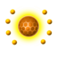
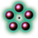

| Heridium Silicate Element - Common | Hr | 20U | Element used in the creation of components vital to space exploration.
Found in planetary terrain. Often highlighted by holographic cubes in user's visor after local scans. |
| Platinum Silicate Element - Uncommon | Pt | 40U | Powerful element used to create valuable ship and exosuit components. A vital ingredient in many technological blueprints.
Found in blue vegetation during planetary exploration. |
| Chrysonite Silicate - Rare | Ch | 60U | A very powerful element used in many advanced technology blueprints, components and product formulas.
Found in blue crystalline structures. |
| Iron Oxide Element - Common | Fe | 10U | Mined element used to build and recharge defensive technologies.
Found in rock formations and areas of geological interest. |
| Zinc Oxide Element - Uncommon | Zn | 30U | Powerful element used to recharge defensive technologies, and to create and maintain many components and devices.
Found in yellow flowering vegetation and planetary flora. |
| Titanium Oxide Element - Rare | Ti | 45U | Extremely powerful oxide that can be used to recharge defensive technologies.
A vital ingredient in the creation of many advanced devices, products and components.
Found in yellow crystal clusters during planetary exploration. |
| Carbon Isotope Element - Common | C | 5U | Important and abundant element used to recharge weaponry, mining equipment and exosuit life support.
Found in planetary trees, plants and other vegetation. |
| Thamium9 Isotope Element - Uncommon | Th | 15U | Powerful element used to charge mining equipment, weaponry and life support systems. Also used in the creation of products and experimental tech devices.
Found in red flowering vegetation and planetary flora. |
| Plutonium Isotope Element - Rare | Pu | 30U | Extremely powerful element that can be used to charge weaponry, mining equipment and exosuit power packs.
A vital ingredient in the creation of many advanced technologies, components and products.
Found in red crystalline structures, and often within planetary cave networks. |
| Iridium Neutral Element - Uncommon | Ir | 70U | A soft, white and lustrous transition metal.
A much prized commodity, and popular cargo for many traders.
Can be combined with other elements to create valuable alloys if formula is available. |
| Copper Neutral Element - Uncommon | Cu | 80U | Highly conductive and versatile metallic element.
A frequent sight in the cargo manifests of traders of many primary galactic species.
Can be combined with other elements to create valuable alloys if formula is available. |
| Nickel Neutral Element - Uncommon | Ni | 100U | A silvery-white metal used in many industrial processes.
Regularly bought, sold and bargained for on the Galactic Trade Network.
Can be combined with other elements to create valuable alloys if formula is available. |
| Aluminium Neutral Element - Rare | Al | 120U | A hugely useful, ductile and versatile metal.
A highly desired element in trading markets and cargo manifests throughout the known galaxy.
Can be combined with other elements to create valuable alloys if formula is available. |
| Gold Neutral Element - Rare | Au | 160U | Rare, highly conductive and used decoratively by many of the galaxy's primary species.
Gold is central to the economies of many galactic species, and a prized trading asset.
Can be combined with other elements to create valuable alloys if formula is available. |
| Emeril Neutral Element - Rare | Em | 200U | A silver-black metal that emits low levels of radiation.
A highly sought after element that's used in the construction of planetary outposts.
Can be combined with other elements to create valuable alloys if formula is available. |
| Radnox Precious Element - Very Rare | Ra | 220U | Mysterious and valuable chemical resource. |
 | Calium Precious Element - Very Rare | Ca | 210U | Rare substance found in many blob-like species throughout the Galaxy. |
|  | Murrine Precious Element - Very Rare | Mu | 220U | Valuable commodity known for its charming qualities. |
|  | Omegon Precious Element - Very Rare | Om | 225U | Dark matter element. A hugely powerful, largely unknown and entirely untested substance.
Extremely rare. |